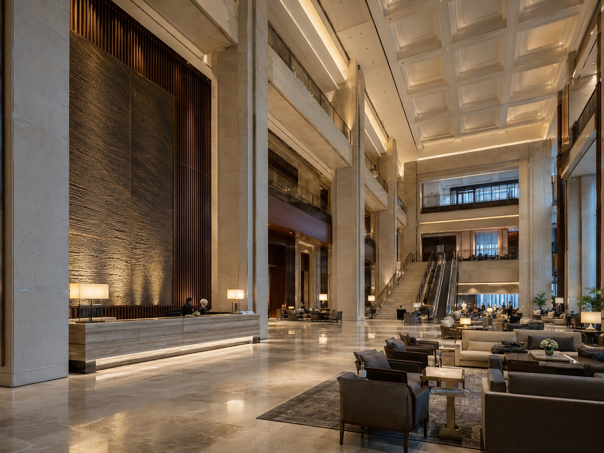
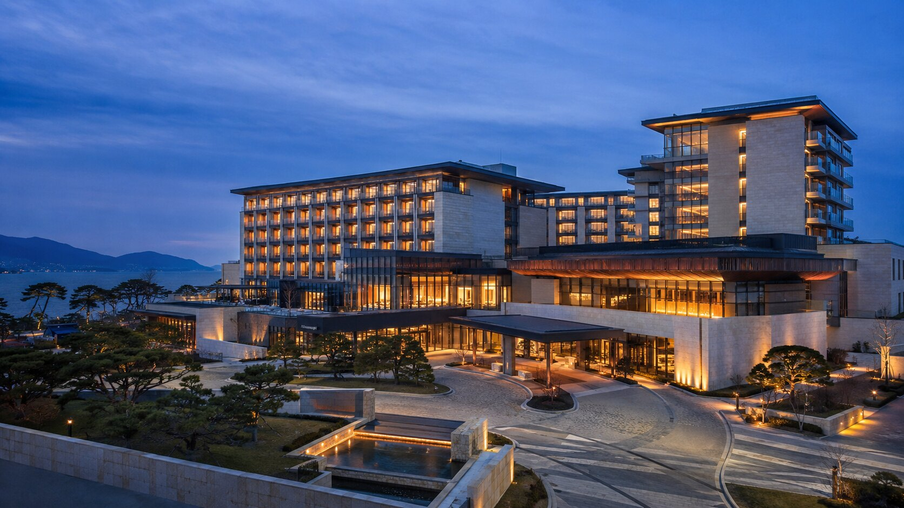

SELECTED HOSPITALITY / 02
더 아트리움 그랜드THE ATRIUM GRAND HOTEL
도착의 순간부터 브랜드의 격을 경험하게 하는 대규모 럭셔리 호텔 프로젝트.
VIEW PROJECT02PROJECT OVERVIEW
머무는 시간 전체가 하나의 환대가 되도록.
거대한 아트리움의 비례와 동선을 먼저 세우고, 리셉션에서 라운지, 다이닝과 객실층으로 이어지는 경험을 정교하게 설계했습니다. 크림 톤의 석재와 브론즈, 짙은 목재를 반복해 서로 다른 기능의 공간에서도 호텔 고유의 인상이 끊기지 않도록 완성했습니다.
PROJECT GALLERY
공간의 장면들
